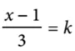

1) If 3(m+2) - 5 = m+2, what is the value of m+2 ?
2) Which of the following numbers is not a solution of the inequality 3x-5 ≥ 4x-3?
3)  What is the value of x for k = 3?
4) On Saturday afternoon, Armand sent m text messages each hour for 5 hours, and Tyrone sent p text messages each hour for 4 hours. Which of the following represents the total number of messages sent by Armand and Tyrone on Saturday afternoon?
5) x + 2y = -25
x + y = -9
According to the system of equations above, what is
the value of x ?